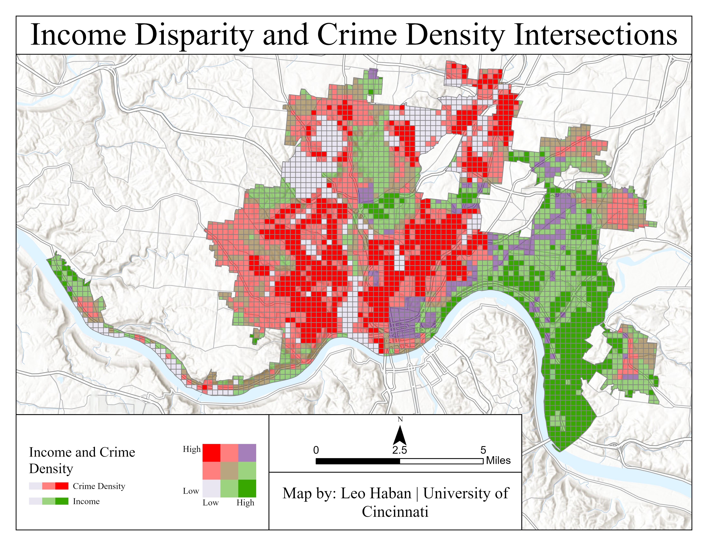
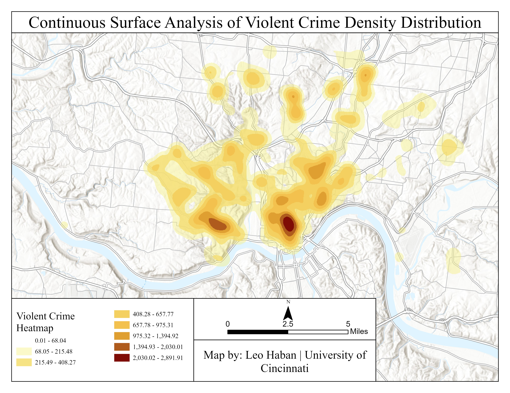
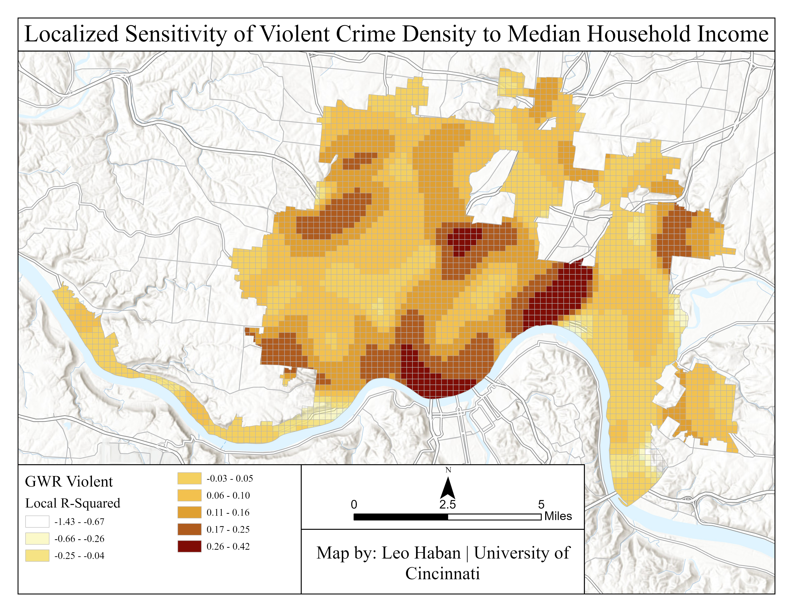

Cincinnati Crime Density
An exploratory visual analytics approach examining socioeconomic correlations and localized income using Geographically Weighted Regression.
The Problem: Boundary Bias in Criminology
Urban criminology often relies on social disorganization theory to explain how socioeconomic disadvantages drive crime. However, traditional analyses utilizing standard census tracts artificially segregate demographics and bias statistical correlations.
To neutralize this boundary bias (the Modifiable Areal Unit Problem, or MAUP), I constructed a rigid, 250-meter equal-area resolution grid and clipped it precisely to the Cincinnati municipal boundary. I then utilized centroid-based spatial joins to execute an area-weighted interpolation, accurately distributing median household income into neutral grid cells.

Visual Analytics & Continuous Surface Modeling
To establish the foundational footprint of criminal activity, I generated Kernel Density Estimation (KDE) surfaces. This continuous surface analysis transforms the localized incident points into highly visible regional epicenters, specifically highlighting the distribution of violent offenses across the city.

Geographically Weighted Regression (GWR)
Initial global statistics calculated an identical -0.205 relationship for both violent and non-violent crimes against income. By applying a Spearman Rank correlation, I revealed the true divergent spatial relationships, confirming that violent crime is more deeply concentrated in lower-income areas, while property crime bleeds more heavily into wealthier transition zones.
To test for spatial non-stationarity, I executed a continuous Gaussian Geographically Weighted Regression. While the global Ordinary Least Squares model diagnostics yielded an Adjusted R² of 0.266, visualizing the Local R² output revealed extreme geographic variation.
The GWR model uncovered specific transition zones where the predictive power of income disparity escalates aggressively. In these highly sensitive pockets, median income accounts for 42.4% of the variance in violent crime.

Conclusion
By neutralizing MAUP and leveraging localized spatial regression, this analysis establishes that a singular global statistic is insufficient for modeling urban crime. Neighborhood-level income dynamics dictate vastly different outcomes across the geographical landscape.